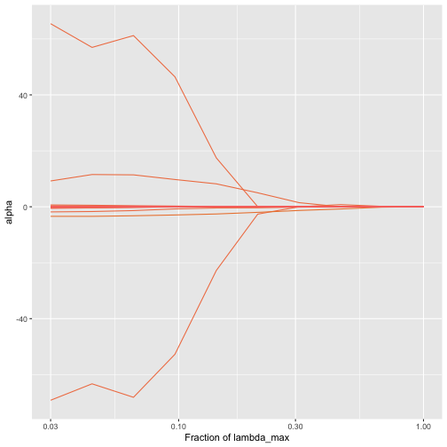
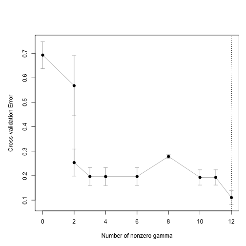
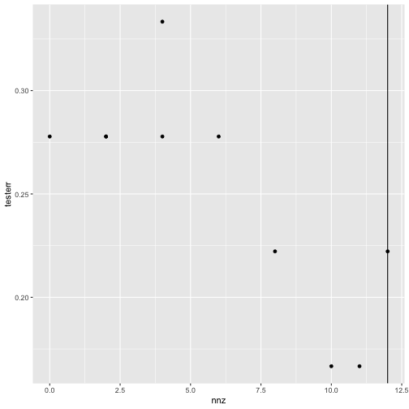
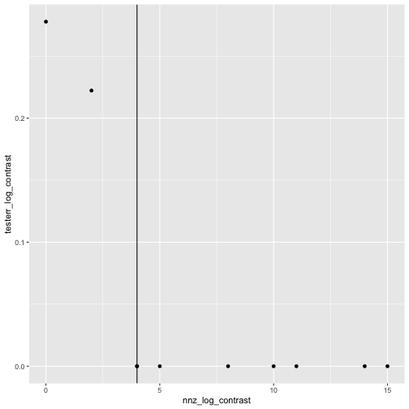

trac classification pipeline
Source:vignettes/trac-classification-pipeline.Rmd
trac-classification-pipeline.Rmdtrac classification pipeline
library(tidyverse) # data wrangling and visualization
library(phyloseq) # microbiome data wrangling
library(trac) # trac
library(kableExtra) # creating tables in rmarkdownThis tutorial aims to provide insight into a analysis pipeline. We
will start with a phyloseq
object (McMurdie and Holmes 2013).
This phyloseq object should contain at least the OTU/ASV
counts and the taxonomic assignment for each OTU/ASV.
knitr::include_graphics("figures/trac_workflow.png")
plot of chunk unnamed-chunk-3
To demonstrate how to use trac, we use the dataset of (Yatsunenko et al. 2012) from the MLRepo. (Vangay, Hillmann, and
Knights 2019). The given OTU labels are matched with the
greengenes 97 database (McDonald et al.
2012). OTUs appearing in less than 10% of the samples are
excluded and only bacteria are included. The concrete
phyloseq object (malawi) contains:
-
otu_table: contains 54 observations and 5008 OTUs -
tax_table: contains the taxonomic assignments of the OTUs. The rownames correspond to the columns of theotu_table -
sam_data: contains the variable of interest (Var) and the additional non-compositional covariates age (numeric) and sex (factor)
This vignette covers the preprocessing and the first stage of the
trac-m workflow: trac and sparse log-contrast models for
the microbiome alone. The additional covariates, a second stage with
pairwise log-ratios and inference on held-out data are shown in trac-m2 for classification.
data("malawi")Preprocessing steps for trac
Create A matrix and generate tree
The workflow to generate the A matrix based on the
phyloseq object could be:
- Extract the taxonomic table from the
phyloseqobject. - Optional: add OTU/ASV level to the taxonomic table.
- Replace unknown taxonomic assignments on different levels, for example, by a number. This prevents the data with unknown taxonomic assignments from being thrown together.
- Add ancestor information –> helpful for reporting the results
- Build tree with
tax_table_to_phylo. This is also helpful to visualize the results at the end. - Call
phylo_to_Ato generate the A matrix
# 1. extract the taxonomic table from the phyloseq object
tax <- malawi@tax_table@.Data
# 2. add an OTU column based on the rownames and name the column OTU
tax <- cbind(tax, rownames(tax))
colnames(tax)[ncol(tax)] <- "OTU"
# In this example is rooted in bacteria since we only consider bacteria. If one also wants to
# include archea one needs to add another root node e.g. cbind(root = "life", tax). Need to
# adjust the for loops in the next steps and add the root to the formula in step 5
# 3. Replace unknown taxonomic assignement on the corresponding level
# iterate over all levels
for (i in seq_len(7)) {
# add a number when the type is unknown... e.g. "g__"
ii <- nchar(tax[, i]) == 3
if (sum(ii) > 0)
tax[ii, i] <- paste0(tax[ii, i], 1:sum(ii))
}
# 4. add the ancestor information with ::
# iterate over all levels
for (i in 2:8) {
tax[, i] <- paste(tax[, i-1], tax[, i], sep = "::")
}
tax <- as.data.frame(tax, stringsAsFactors = TRUE)
# 5. form phylo object:
tree1 <- tax_table_to_phylo(~Kingdom/Phylum/Class/Order/
Family/Genus/Species/OTU,
data = tax, collapse = TRUE)
# 6. convert this to an A matrix to be used for aggregation:
A <- phylo_to_A(tree1)Pseudo-count + log transformation
trac expects log transformed values as inputs. Since is undefined we need to add a pseudo-count (e.g. 1)
log_pseudo <- function(x, pseudo_count = 1) log(x + pseudo_count)
z <- log_pseudo(malawi@otu_table@.Data)Align the columns of z with the rows of A
tax_table_to_phylo orders the leaves by the tree, so the
rows of A are not in the column order of the OTU table.
trac pairs column
of z with row
of A without checking names; a misaligned model still fits
and can even predict well, but its clades are built from the wrong OTUs.
The rownames of A end in the OTU id, so reorder
z and check it:
Model fitting
Train-test split
First we split the data into a train-test split to evaluate the predictive performance at the end. Other more advanced methods can be used as well.
# extact the label
y <- malawi@sam_data$Var
# transform depended variable to -1 and 1
y <- (y == "Malawi") * 2 - 1
# define seed for reproducibility
set.seed(1)
# train test split
ntot <- length(y)
n <- round(2/3 * ntot)
tr <- sample(ntot, n)
# define training and test data
ytr <- y[tr]
yte <- y[-tr]
ztr <- z[tr, ]
zte <- z[-tr, ]Fit model: Classification with squared hinge loss
We will fit the model on the train data. The task is to predict if
the person lives in Venezuela or Malawi therefore a binary
classification task. Specify this by the argument method.
The method will solve the lambda path and selecting the optimal tuning
parameter
.
The path for the coefficient can be plotted with
plot_trac_path.
# fit trac with c1
fit <- trac(ztr, ytr, A = A, min_frac = 3e-2, nlam = 10, method = "classif")
plot_trac_path(fit)
As a baseline we can fit a sparse log-contrast model on the OTU level as well.
fit_log_contrast <-
sparse_log_contrast(Z = ztr, y = ytr, min_frac = 3e-2,
nlam = 10, method = "classif")One can usually not scale the compositional data, but an alternative
is to set penalty weights, such that the sparse log-contrast model does
not favours taxa whose log-abundances vary a lot, because they can enter
with small coefficients. Weighting each taxon’s penalty by its standard
deviation in the training data is the same as standardising the taxa,
while the zero-sum constraint stays on the original coefficients.
sparse_log_contrast() has no argument for weights on the
taxa. The same model is trac() with an identity aggregation
matrix, whose argument w sets one penalty weight per taxon;
with w left at 1 it reproduces
sparse_log_contrast() exactly.
# trac centres each sample (clr), so take the standard deviations after centring
w_taxa <- apply(ztr - rowMeans(ztr), 2, sd)
A_leaf <- as(Matrix::Diagonal(ncol(ztr)), "CsparseMatrix")
dimnames(A_leaf) <- list(colnames(ztr), colnames(ztr))
fit_log_contrast_fair <-
trac(ztr, ytr, A = A_leaf, w = w_taxa,
min_frac = 3e-2, nlam = 10, method = "classif")Find optimal hyper-parameter
The optimal can be determined with cross-validation for each model.
set.seed(1)
# run cross validation
cvfit <- cv_trac(fit, Z = ztr, y = ytr, A = A)
#> fold 1
#> fold 2
#> fold 3
#> fold 4
#> fold 5
plot_cv_trac(cvfit)
set.seed(1)
cvfit_log_contrast <-
cv_sparse_log_contrast(fit_log_contrast, Z = ztr, y = ytr)
#> fold 1
#> fold 2
#> fold 3
#> fold 4
#> fold 5
set.seed(1)
cvfit_log_contrast_fair <-
cv_trac(fit_log_contrast_fair, Z = ztr, y = ytr, A = A_leaf)
#> fold 1
#> fold 2
#> fold 3
#> fold 4
#> fold 5Reporting
Evaluation of predictive performance
# get predicted values
# trac
yhat_te <- predict_trac(fit, new_Z = zte)
# sparse log-contrast classification
yhat_te_log_contrast <-
predict_trac(list(fit_log_contrast), new_Z = zte)
# calculate missclassification error for each methods
# trac classification
testerr <- colMeans(sign(yhat_te[[1]]) != yte)
nnz <- colSums(fit[[1]]$alpha != 0)
# sparse log-contrast classification
testerr_log_contrast <- colMeans(sign(yhat_te_log_contrast[[1]]) != yte)
nnz_log_contrast <- colSums(fit_log_contrast$beta != 0)
# plot missclassification error of test split based on number of
# selected taxa (trac)
tibble(nnz = nnz, testerr = testerr) %>%
ggplot(aes(x = nnz, y = testerr)) +
geom_point() +
geom_vline(xintercept = nnz[cvfit$cv[[1]]$i1se])
# plot missclassification error of test split based on number of
# selected taxa (sparse log contrast)
tibble(nnz = nnz_log_contrast, testerr = testerr_log_contrast) %>%
ggplot(aes(x = nnz_log_contrast, y = testerr_log_contrast)) +
geom_point() +
geom_vline(xintercept = nnz_log_contrast[cvfit_log_contrast$cv$i1se])
Fair selection changes which taxa enter the sparse log-contrast model. At the minimum cross-validation error, the unweighted model picks taxa with a much larger spread than the typical taxon with the standard-deviation weights the selected taxa are less extreme.
selected <- function(b) names(b)[b != 0]
i_slc <- cvfit_log_contrast$cv$ibest
i_fair <- cvfit_log_contrast_fair$cv[[1]]$ibest
sel_slc <- selected(fit_log_contrast$beta[, i_slc])
sel_fair <- selected(fit_log_contrast_fair[[1]]$beta[, i_fair])
yhat_te_fair <- predict_trac(fit_log_contrast_fair, new_Z = zte)[[1]][, i_fair]
tibble(model = c("sparse log-contrast", "sparse log-contrast, fair weights"),
selected_taxa = c(length(sel_slc), length(sel_fair)),
median_sd_of_selected = c(median(w_taxa[sel_slc]), median(w_taxa[sel_fair])),
test_error = c(mean(sign(yhat_te_log_contrast[[1]][, i_slc]) != yte),
mean(sign(yhat_te_fair) != yte))) %>%
kable(digits = 2)| model | selected_taxa | median_sd_of_selected | test_error |
|---|---|---|---|
| sparse log-contrast | 5 | 3.26 | 0 |
| sparse log-contrast, fair weights | 3 | 2.64 | 0 |
Reporting of Results
The following code shows an example on how to extract the selected components based on the fitted trac object.
# define the different taxonomic ranks
rank_names <- c("Kingdom",
"Phylum",
"Class",
"Order",
"Family",
"Genus",
"Species")
# get non-zero alphas
show_nonzeros <- function(x){
enframe(x[x != 0]) %>%
mutate(name = str_remove_all(name, "[a-z]__"),
name = str_remove_all(name, "'")) %>%
separate(name, into = rank_names, sep = "::", fill = "right") %>%
mutate(across(where(is.character), ~replace_na(.x, " "))) %>%
arrange(value) %>%
rename(alpha = value)
}
show_nonzeros(fit[[1]]$alpha[, cvfit$cv[[1]]$i1se]) %>%
kable()| Kingdom | Phylum | Class | Order | Family | Genus | Species | alpha |
|---|---|---|---|---|---|---|---|
| Bacteria | Firmicutes | Clostridia | Clostridiales | -69.1706599 | |||
| Bacteria | Proteobacteria | -3.4144062 | |||||
| Bacteria | Firmicutes | Clostridia | Clostridiales | Ruminococcaceae | -1.8339628 | ||
| Bacteria | Bacteroidetes | Bacteroidia | Bacteroidales | Bacteroidaceae | -0.5743973 | ||
| Bacteria | Firmicutes | Clostridia | Clostridiales | Lachnospiraceae | Coprococcus | -0.3839477 | |
| Bacteria | Bacteroidetes | Bacteroidia | Bacteroidales | -0.3649045 | |||
| Bacteria | Firmicutes | Clostridia | Clostridiales | Lachnospiraceae | -0.1604407 | ||
| Bacteria | Firmicutes | Clostridia | Clostridiales | Veillonellaceae | 0.2372019 | ||
| Bacteria | Tenericutes | Mollicutes | 0.3190155 | ||||
| Bacteria | Firmicutes | Clostridia | Clostridiales | Clostridiaceae | 0.6669931 | ||
| Bacteria | Firmicutes | 9.2275209 | |||||
| Bacteria | Firmicutes | Clostridia | 65.4519877 |
Next steps
To add the covariates age and sex to the model, to express it in terms of pairwise log-ratios with a second stage and to estimate the effects of these log-ratios on held-out data, continue with trac-m2 for classification.